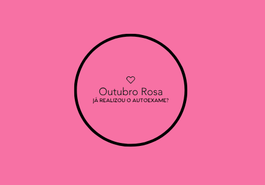

Notícias Presidência Executiva
Outubro Rosa 2018

Na década de 1990, nasce o movimento conhecido como Outubro Rosa, para estimular a
participação da população no controle do câncer de mama. A data é celebrada anualmente,
com o objetivo de compartilhar informações sobre o câncer de mama, promover a
conscientização sobre a doença, proporcionar maior acesso aos serviços de diagnóstico e
de tratamento e contribuir para a redução da mortalidade.
O INCA participa do movimento desde 2010, promove eventos técnicos, debates e
apresentações sobre o tema, assim como produz materiais e outros recursos educativos
para disseminar informações sobre prevenção e detecção precoce da doença.
Campanha Outubro Rosa 2018
Em 2018, a campanha do INCA no Outubro Rosa tem como tema "Câncer de mama: vamos falar
sobre isso?". O objetivo é fortalecer as recomendações do Ministério da Saúde para o
rastreamento e o diagnóstico precoce do câncer de mama e desmistificar conceitos em
relação à doença. A campanha:
enfatiza a importância de a mulher conhecer suas mamas e ficar atenta às alterações
suspeitas;
informa que para mulheres de 50 a 69 anos é recomendada a realização de uma mamografia
de rastreamento a cada dois anos;
O autoexame das mamas não substitui o exame médico! Quando o câncer de mama tem sintomas
visíveis, ele já está mais avançado
Lembre-se: você deve ser protagonista de sua saúde, exija seus exames se notar algo
diferente, mesmo que seu médico acredite que não seja um caso de câncer.
01 de Outubro – Dia Nacional do Idoso
O Dia Internacional do Idoso é comemorado anualmente a 1 de outubro.
A ONG Moradia e Cidadania comemora e parabeniza a todos que estão na melhor idade, em
especial, aos nossos associado\s!
Este dia foi instituído em 1991 pela (ONU) Organização das Nações Unidas e tem como
objetivo sensibilizar a sociedade para as questões do envelhecimento e da necessidade
de proteger e cuidar a população mais idosa. A mensagem do dia do idoso é passar mais
carinho aos idosos, muitas vezes esquecidos pela sociedade e pela família.
No Dia Internacional do Idoso decorrem várias iniciativas para a população idosa,
nomeadamente palestras, sessões de atividade física e workshops de artes manuais
Em 2016, o 26º. Dia Internacional das Pessoas Idosas celebrado pela ONU tem o tema:
"Tome uma posição contra o envelhecimento".
População idosa no Brasil
Existem 600 milhões de pessoas com mais de 60 anos no mundo. Em 2025 este número será o
dobro.
O Instituto Nacional de Estatística prevê igualmente que no ano de 2050, um terço da
população portuguesa seja idosa e quase um milhão de pessoas tenha mais de 80 anos.
Estes cálculos são feitos com base na tendência de envelhecimento da população,
resultante do aumento da esperança de vida e da diminuição dos níveis de fecundidade.
Frases para o Dia Internacional do Idoso
Respeitar as pessoas idosas é tratar o próprio futuro com respeito, pois um dia seremos
todos idosos.
Neste dia alegria, emoção, paz e amor no coração.
Por mais rugas que o idoso tenha, nada esconde o amor que tem por nós.
Quanto maior a idade, maior a sabedoria, a paciência e o amor.
É com os idosos que podemos aprender mais sobre a vida.